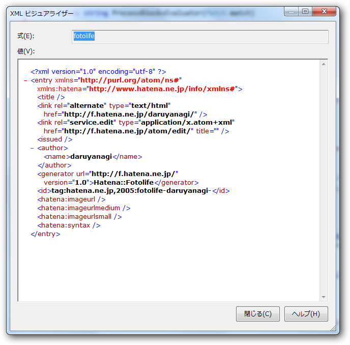

はてなフォトライフ API の EditURI に GET したら空の XML が返ってくる
執筆日時：

うちのコードがおかしいのかと思って調べてみたら、同じような不具合にであっている人が複数いたようだ。
- はてなアイデア - AtomAPIにてEditURIに対してGET操作を行った所、空の情報が返ってくる。HTTPヘッダは「200 OK」なのですが、XML内の各要素は空白です。
- はてなフォトライフAtomAPI、EditURIに対してGET操作を行った所、空の情報が返ってくる - 航星日誌補足
もしかしたら2009年から放置されているのかな？
だったら、ちょっとヒドい '`,､('∀`) '`,､
とりあえずスクレイピングでもしようか。